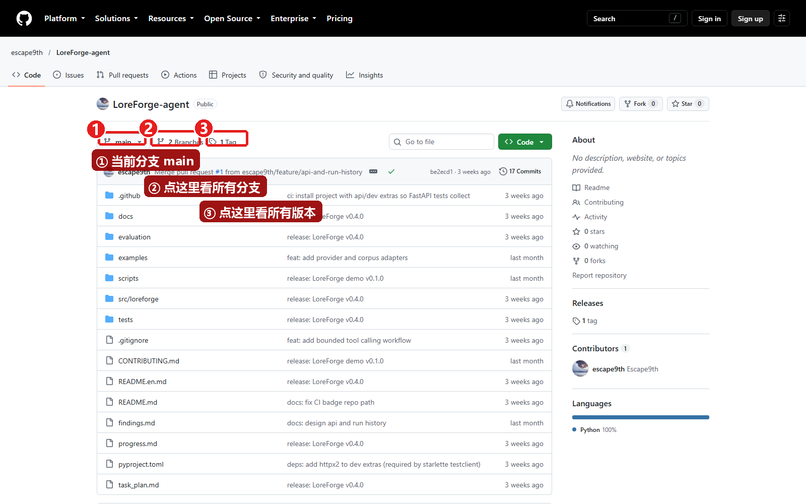
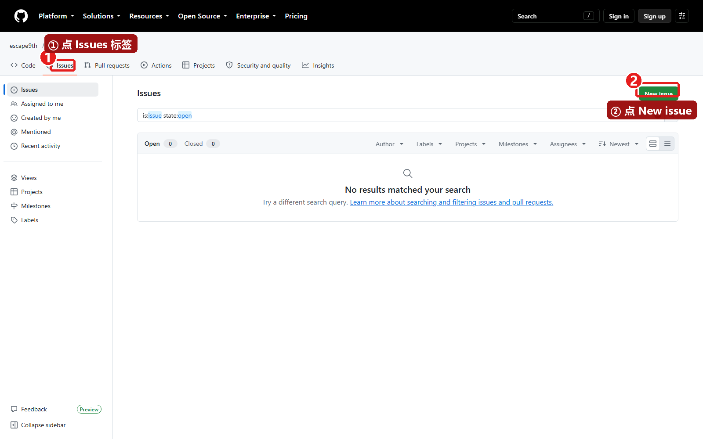
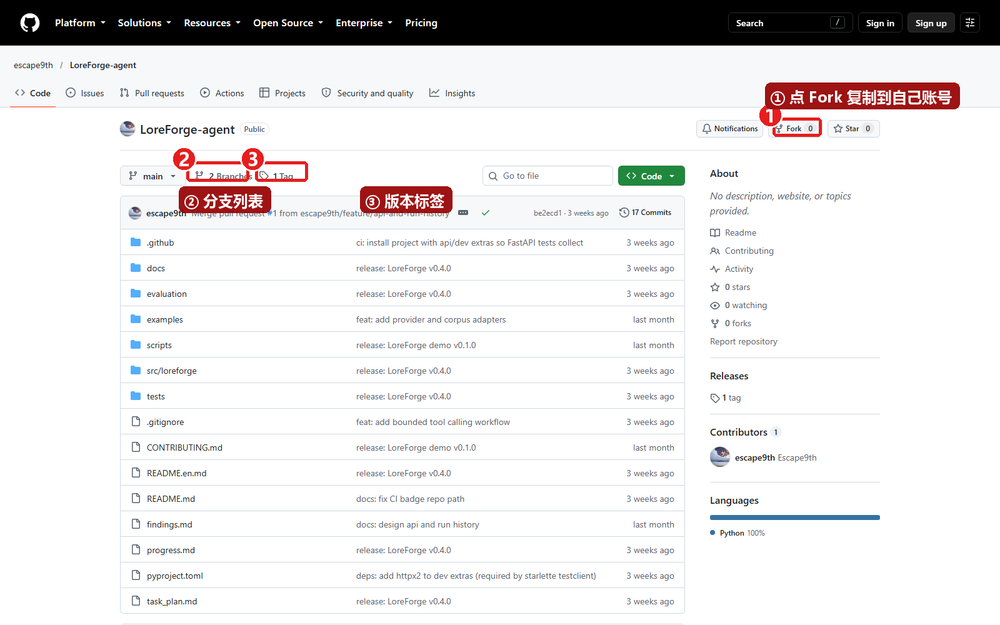
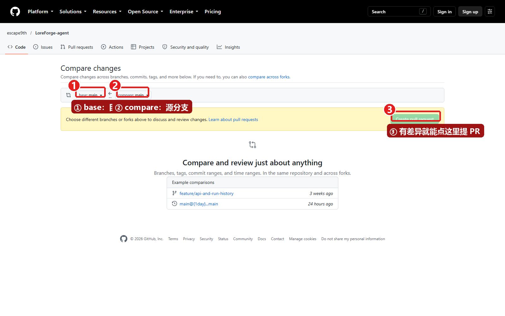
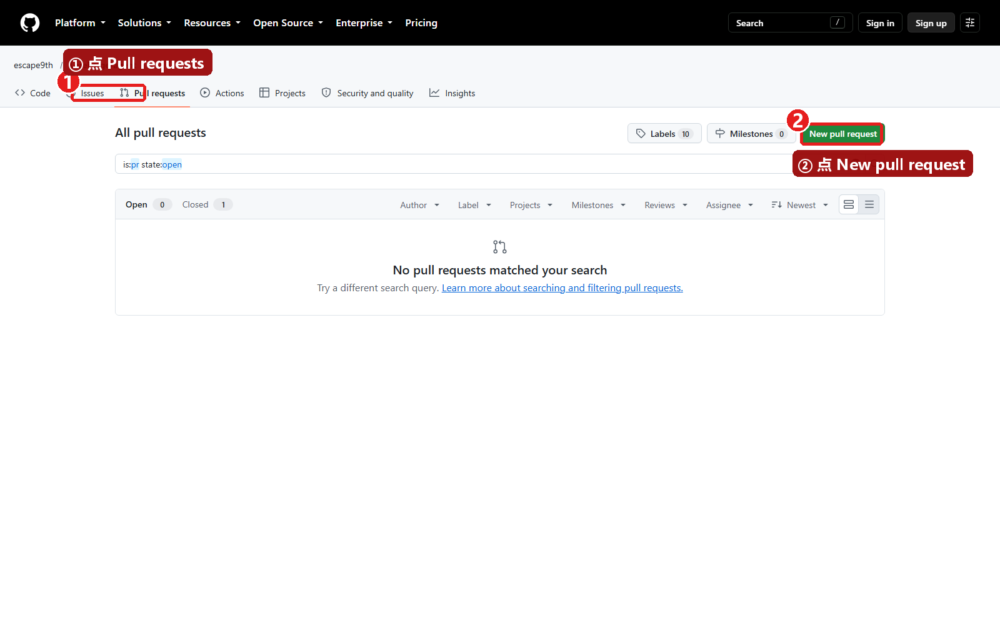
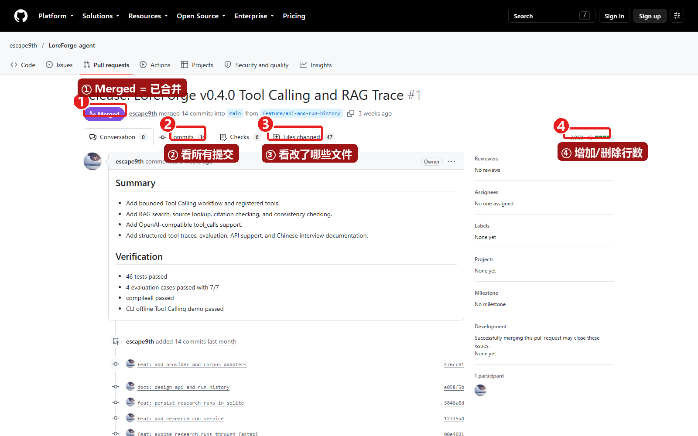

GitHub 新手引导
用你自己的项目 escape9th/LoreForge-agent 做教材 · 每一步都标出「点哪里」
★ 开始之前
这份教程里的每张图，都是你这个仓库的真实截图。
浏览器打开：https://github.com/escape9th/LoreForge-agent
确认你已登录（右上角有你的头像）。没登录时很多按钮不显示——这就是新手最常踩的坑。
0 认识这个页面
先知道各个按钮在哪，后面就不会迷路。

| 位置 | 叫什么 | 干什么用 |
|---|---|---|
| 顶部一排 | Code / Issues / Pull requests | 看代码 / 提问题 / 提改动的申请 |
| 右上角 | Fork / Star | 复制别人的仓库 / 收藏点赞 |
| 文件名上方 | main ▾ / 2 Branches / 1 Tag | 切分支 / 看所有分支 / 看所有版本 |
1 提一个 Issue（最简单的操作）
Issue = 公开的「任务卡 / 问题单」。报 bug、提需求、提问都用它。任何人都能开。
点顶部 Issues 标签
点右上角绿色 New issue 按钮

填 Title（一句话说清问题）+ 下面大框写正文
点绿色 Submit new issue
1. 我做了什么
2. 期望什么
3. 实际什么
4. 怎么复现（步骤/截图）
New issue 按钮；未登录会跳到登录页。2 Fork 别人的仓库
Fork = 把别人的仓库复制一份到你自己的账号下。你没有对方仓库的写权限，只能 fork 出来改，改完再申请合并回去。
打开想改的仓库（比如别人的项目）
点右上角 Fork 按钮

在弹出页选 Owner = 你自己，保持名字不变，点绿色 Create fork
你的名字/原仓库名。这个副本你有完整写权限，随便改。3 从你的 Fork 提一个 PR
PR（Pull Request）= 「我改好了，请把我这部分合并进去」。这是把代码送进别人项目的唯一正规途径。
在你 fork 出来的仓库里改文件，Commit changes 提交
回到原仓库，打开 /compare 页面
左边 base 选对方的主分支；右边 compare 选你的分支（跨 fork 时点 “compare across forks”）

点 Create pull request → 填标题和说明 → 再点一次 Create pull request
Compare & pull request，效果一样。4 看不同版本
想知道「改了什么」「哪个版本」，有四个入口。
| 想看什么 | 点哪里 |
|---|---|
| 切换到另一个分支 | 左上角 main ▾ 下拉，选分支 |
| 所有分支列表 | 2 Branches |
| 历史提交记录 | 17 Commits（首页中间）或 /commits/main |
| 发布版本 | 1 Tag 或右侧 Releases |
| 两个版本差多少 | 地址后面加 /compare |
/compare 拼到仓库地址后面，然后选两个分支/tag 对比，diff 会一段段标出 + 新增 / - 删除。5 审别人的 PR（同意 / 允许）
你是仓库主人时，别人给你的项目提 PR，你要判断「改得对不对」，然后批准。
点 Pull requests → 点开那个 PR

点 Files changed 看具体改了哪些行（绿色=新增，红色=删除）
点右上角 Review changes → 选 Approve（同意）→ Submit review
① Allow edits by maintainers —— PR 右侧的勾选框，勾了对方（维护者）可以直接改你的分支，省一轮来回。
② 邀请合作者 —— 进
Settings → Collaborators 加人，对方才有直接推送权限。6 合并 PR
PR 检查通过、你也批准了，就可以合并进主分支。
回到 PR 页的 Conversation 标签，往下滚到底部
点绿色大按钮 Merge pull request
再点 Confirm merge → 出现紫色 Merged 就成功了
（可选）点 Delete branch 删掉改完的分支，保持仓库干净

Merge pull request 按钮？说明你没有该仓库的写权限（不是自己的仓库、也没被加为合作者）。这时候你只能评论，不能合并。7 状态速查
PR 上那几个彩色小标签是什么意思。
| 看着像 | 含义 | 还要你做什么 |
|---|---|---|
| Open | 还开着，等处理 | 等 review 或自己继续改 |
| Merged | 已合并进主分支 | 没事了，可删分支 |
| Closed | 被关掉了（可能被拒） | 看评论找原因，别硬来 |
? 常见困惑
这些你一定会遇到。
通知里只有 1 个 PR，我明明提了 3 个？
通知 ≠ PR 列表。GitHub 只在「别人对你的 PR 有新动作」时才通知你。要看全部 PR，去 github.com/pulls。
为什么别人能 fork 我的仓库？
Public 仓库谁都能 fork，这是 GitHub 的设计。Fork 只复制，改不了你的原仓库，必须提 PR 经你同意。
Fork 完要手动同步吗？
对方更新后，你 fork 的副本不会自动更新。打开你 fork 的仓库，点 Sync fork → Update branch。
PR 被关了还能重开吗？
自己关的可以点 Reopen；被维护者关掉的不能重开，只能读对方规则、改好了重新提一个新的。